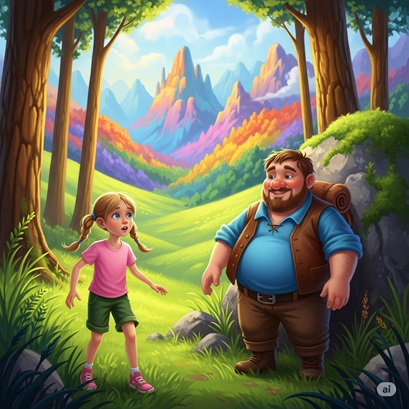
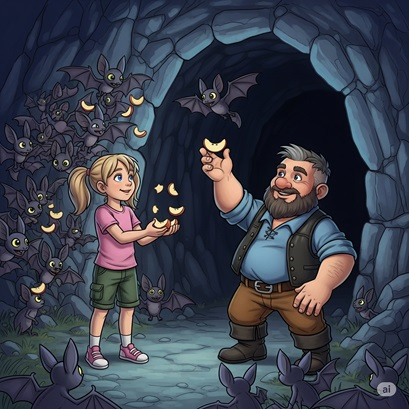
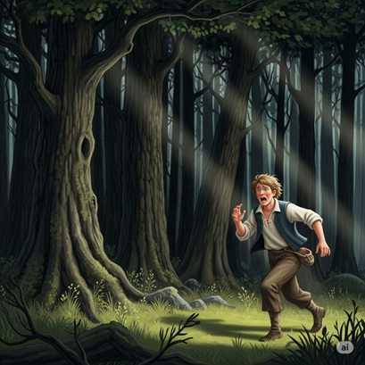
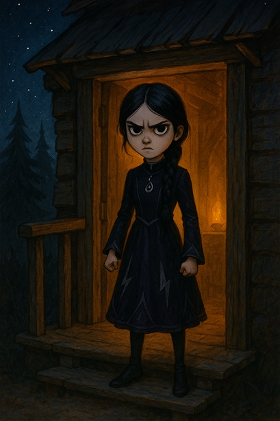

Зоряна — звичайна дівчинка, яка раптом опиняється в абсолютно незнайомому світі. Без рідних та звичних речей навколо, вона зустрічає таємничого Стіва, який стає її провідником у цьому дивному й небезпечному Світокраї...
Маленька героїня швидко вчиться виживати, освоюючи майстерність крафту — створення необхідних речей з підручних матеріалів. Разом зі Стівом та їхнім новим чотирилапим другом Кубчиком, вони вирушають у захопливі, а часом і небезпечні подорожі. На дівчинку чекають не лише дивовижні відкриття, а й усвідомлення власної, незвичайної сили. Чи зможе Зоряна розкрити всі таємниці Світокраю і знайти своє місце в ньому?
"Подорож до Серця Світокраю" — це історія про дружбу, відвагу та відкриття. Про те, як маленька дівчинка не лише освоює новий, чарівний світ, а й вчиться розуміти його глибше, знаходячи справжні скарби не лише у вигляді блискучих алмазів, а й у серцях своїх нових друзів. Приготуйтеся до захопливої подорожі, де кожен крок — це нове диво!
Зоряна прокинулася на м'якій траві, відчуваючи на обличчі теплі промені незнайомого сонця...
Зоряна прокинулася на м'якій траві, відчуваючи на обличчі теплі промені незнайомого сонця. Вона сіла, потерла блакитні очі та озирнулася. Замість звичного дитячого садочка чи будинку бабусі, її оточував дивний, але чарівний світ.
— Де я? — прошепотіла дівчинка, поправляючи свої світлі косички.
Навколо простягалися зелені луки, а вдалині височіли гори з дивними кольоровими прошарками. Дерева мали незвично правильні стовбури, а трава була настільки яскравою, ніби хтось розмалював її найкращими фарбами.
— Гей, малечо! — почувся грубуватий, але добрий голос. — Що ти тут робиш сама?
З-за великого каменя вийшов невисокий чоловік з округлим животиком і короткою окладистою бородою. На ньому була синя сорочка з закатаними рукавами, коричневі штанці та розстібнута шкіряна жилетка.
— Я... я не знаю, — відповіла Зоряна, підводячись. — А ви хто?
— Мене звуть Стів, — посміхнувся чоловік. — А це, маленька мандрівнице, називається Світокрай. Тут можна знайти все, що душа забажає, але треба знати, як це робити.
Зоряна нахилила голову набік, розглядаючи незнайомця. Щось підказувало їй, що йому можна довіряти.
— А я Зоряна! — весело представилася вона. — Але чому тут усе таке... незвичайне?
— Бо це особливий світ, — пояснив Стів, почухавши бороду. — Тут треба самому добувати їжу, будувати дім, створювати інструменти. Але не хвилюйся, я навчу тебе всьому, що знаю сам.
Раптом з-за дерев почувся лякаючий стогін. Зоряна злякано притулилася до Стіва, а той насторожено озирнувся.
— Зомбі, — прошепотів він. — Зазвичай вони з'являються вночі, але цей, схоже, заблукав.
З лісу вийшла похитна зелена постать у пошматованому одязі. Зомбі простягнув руки до них і заревів.
— Стій! — раптом крикнула Зоряна, зробивши крок уперед. — Навіщо ти такий сердитий? Може, ти просто втомився?
Стів здивовано глянув на дівчинку. Зомбі зупинився, похитав головою, ніби намагаючись щось зрозуміти.
— Послухай, — продовжила Зоряна тоном, яким зазвичай розмовляла з сердитими дітьми в садочку, — може, ти шукаєш щось? Якщо ти не будеш нас лякати, ми допоможемо тобі знайти дорогу додому.
Зомбі почухав голову, промимрив щось незрозуміле і, на превелике здивування Стіва, розвернувся та поплентався назад до лісу.
— Неймовірно! — вигукнув Стів. — За всі мої роки в Світокраї я ніколи такого не бачив! Зоряно, в тебе справжній талант!
Дівчинка зашарілася:
— Я просто подумала, що він, може, не такий поганий, як здається.
— Ось це і є справжня суперсила, — посміхнувся Стів. — Але зараз нам треба подбати про безпеку. Незабаром стемніє, а вночі в Світокраї може бути небезпечно.
Наступні години пролетіли як одна мить. Стів показав Зоряні основи виживання в Світокраї — як заготовляти деревину та обробляти її на дошки, як добувати камінь та виготовляти з цих матеріалів перші інструменти.
— Дивись, — казав він, майстерно поєднуючи оброблену деревину, — якщо правильно з'єднати дошки та палички, вийде міцна сокира!
— Неймовірно! — захоплено вигукнула Зоряна.
— Це називається крафт, — засміявся Стів. — Головне правило Світокраю: майже все можна створити, якщо знаєш правильний рецепт та маєш потрібні матеріали.
Разом вони побудували невеликий, але затишний будиночок. Стів показав, як правильно з'єднувати дерев'яні балки та дошки, як укладати кам'яний фундамент. Зоряна особливо пишалася тим, що сама встановила вікно, обережно вставивши скляні блоки в дерев'яну раму.
— А тепер давай приготуємо вечерю, — запропонував Стів, розпалюючи вогонь у печі.
Під час вечері, поїдаючи смажену свинину та хліб, Стів розповів свою історію:
— Колись я жив у великому місті крафтійців, але мені набридла метушня. Вирішив оселитися тут, у глушині, подалі від усіх. Але знаєш що, Зоряно? Останні місяці я дуже сумував за дружнім спілкуванням.
— А я рада, що зустріла вас, дядечку Стіве! — щиро сказала дівчинка.
— І я радий, малечо. А завтра, якщо хочеш, покажу тобі справжнє диво — печеру, де живуть дружелюбні кажани. Там можна знайти цінні ресурси для наших майбутніх пригод.
Зоряна заплескала в долоні:
— Обов'язково! Це звучить як справжня пригода!
Коли настала ніч, вони лягли спати на м'яких ліжках, які Стів змайстрував з вовни та дерева. За вікном тихо шумів вітер, а десь далеко перегукувалися нічні птахи. Зоряна усміхнулася, засинаючи. Їй дуже сподобався цей дивний світ, а найбільше — те, що вона знайшла справжнього друга.
Наступного ранку Зоряна прокинулася від приємного аромату свіжоспечених млинців. Стів уже метушився біля печі, перевертаючи золотисті коржики.
— Доброго ранку, маленька мандрівнице! — привітно вигукнув він. — Готова до нашої першої справжньої пригоди?
— Так! — вистрибнула з ліжка дівчинка, швидко заплітаючи косички. — А що нам знадобиться для походу в печеру?
— Насамперед, хороші інструменти, — сказав Стів, показуючи на дерев'яні кайла та сокири, які вони виготовили напередодні. — Ну і смаколики для кажанів. Вони дуже люблять яблука.
Поснідавши, вони зібрали все необхідне в рюкзаки та вирушили в дорогу. Печера знаходилася за невеликим пагорбом, і дорога до неї була приємною прогулянкою серед квітучих луків.
— Дядечку Стіве, а чому кажани дружелюбні? — запитала Зоряна, підстрибуючи через струмочок.
— Не всі кажани добрі, — пояснив Стів. — Але ці особливі. Вони живуть біля входу в печеру та допомагають мандрівникам знаходити дорогу в темряві.
Коли вони наблизилися до печери, Зоряна побачила десятки маленьких чорних тіней, що кружляли біля входу.
— Не бійся, — заспокоїв її Стів. — Дивись.
Він дістав яблуко та підкинув його вгору. Один з кажанів спіймав фрукт та радісно пищав, ніби дякував.
— Вони такі кумедні! — захоплено вигукнула Зоряна. — Можна я теж погодую їх?
Незабаром дівчинка була оточена маленькими крилатими друзями, які обережно брали яблучні скибочки з її рук та весело цвірінькали.
— Тепер можемо йти в печеру, — сказав Стів, запалюючи смолоскип. — Кажани знають, що ми друзі, і допоможуть нам.
Усередині печери було прохолодно та таємниче. Стіни виблискували різними кольорами, а десь у глибині дзвеніла вода.
— Дивись, Зоряно! — показав Стів на стіну, де виднілися сірі та коричневі плями. — Це залізна руда та вугілля. Дуже цінні ресурси!
Вони почали обережно видобувати руду своїми кайлами, коли раптом почувся лязг кісток. З темного закутка вийшов скелет з луком у руках.
— Ой! — злякалася Зоряна, хапаючи Стіва за руку.
— Тікаємо! — крикнув Стів, і вони кинулися навтіки вглиб печери.
Але скелет виявився швидшим, ніж вони очікували. Незабаром він наздогнав їх у тупику.
— Стій! — крикнула Зоряна, повертаючись до скелета. — Навіщо ти нас переслідуєш?
Скелет зупинився, нахиливши кістяну голову.
— Може, ти просто самотній? — запитала дівчинка співчутливо. — Мабуть, нелегко весь час бути одному в темній печері.
Стів приголомшено дивився, як скелет опустив лук.
— Якщо ти перестанеш нас лякати, — продовжила Зоряна, — я розкажу тобі кумедну історію про кота, який думав, що він лев!
І вона справді розповіла таку смішну історію, що навіть Стів засміявся від усього серця. Скелет слухав, похитуючи головою в такт розповіді. А коли Зоряна закінчила, він з радісним брязкотом розсипався на окремі кістки, залишивши їх як подарунок новим друзям.
— Неймовірно! — вдруге за день вигукнув Стів. — Зоряно, твоя суперсила стає все сильнішою!
На зворотному шляху, коли вони вже виходили з печери, їхню увагу привернуло жалібне скавчання. Біля купи каміння сиділо маленьке сіре цуценя... ні, це було вовченя!
— Бідненьке, — прошепотіла Зоряна, підбігаючи до малюка. — Воно поранене!
Вовченя справді мало подряпану лапку, а навколо лежали кістки зомбі — мабуть, дорослі захищали малюка, але загинули в бою.
— Не бійся, — ласкаво промовила Зоряна, обережно беручи вовченя на руки. — Ми подбаємо про тебе.
Вовченя поглянуло на неї великими бурштиновими очима та тихенько гавкнуло, ніби погоджуючись.
— Як його назвемо? — запитала дівчинка.
— А як тобі подобається ім'я Кубчик? — запропонував Стів. — Він такий маленький та квадратний, як справжній кубик.
— Кубчик! — захоплено повторила Зоряна. — Тобі подобається таке ім'я?
Кубчик радісно тявкнув та лизнув дівчинку в щоку.
Вдома вони промили та перев'язали лапку новому другу, нагодували його м'ясом та зробили м'яку лежанку біля каміна. Кубчик швидко освоївся та весь вечір бігав за Зоряною, граючись з нею.
— Знаєш, Зоряно, — сказав Стів, дивлячись на щасливу дівчинку з вовченям, — думаю, наступного разу ми можемо спуститися глибше в печеру. Там є ще більше цікавих речей.
— А Кубчик піде з нами? — запитала дівчинка.
— Звичайно! — засміявся Стів. — Справжні друзі завжди тримаються разом.
Кубчик, ніби розуміючи розмову, радісно гавкнув та завив коротенький пісенний вий — його перша спроба показати свою особливу здатність. Зоряна заплескала в долоні, а Стів поклав руку на голову вовченяти:
— Ось і сформувалася наша команда пригодників!
Ранкове сонце освітлювало їхній затишний будиночок, а Кубчик уже бігав по подвір'ю, граючись з метеликами. Його лапка загоїлася, і тепер він був готовий до нових пригод.
— Сьогодні особливий день! — оголосив Стів, виходячи з будинку з купою залізної руди. — Будемо будувати справжню майстерню!
— А що це таке? — цікаво запитала Зоряна, пригладжуючи свої косички.
— Це місце, де ми зможемо створювати найкращі інструменти та зброю, — пояснив Стів. — Але спочатку треба побудувати піч для переплавки руди.
Наступні години пролетіли в приємній роботі. Стів показав Зоряні, як укладати камінь, щоб вийшла міцна піч, а дівчинка допомагала, подаючи потрібні матеріали. Кубчик теж не залишався осторонь — він приносив у зубах дрібні камінчики.
— Молодець, Кубчику! — хвалила його Зоряна. — Ти справжній помічник!
Коли піч була готова, Стів розпалив у ній вогонь та поклав залізну руду.
— А тепер чекаємо, — сказав він. — Руда повинна розплавитися та перетворитися на залізні злитки.
Поки вони чекали, Стів побудував справжню майстерню — великий стіл з особливими відділеннями для інструментів та матеріалів.
— Дивись, яке диво! — вигукнув він, дістаючи з печі розжарені залізні злитки. — Тепер можемо створити справжні інструменти!
Зоряна заворожено спостерігала, як Стів майстерно складає залізо та палички на столі майстрів.
— Він справді чарівний! — прошепотіла вона, коли побачила, як матеріали перетворюються на блискучу залізну сокиру.
— А це ще не все, — підморгнув Стів. — Зараз зробимо тобі особливе кайло!
Невдовзі в руках у Зоряни з'явилося власне залізне кайло, легке та міцне.
— Воно таке красиве! — захоплено сказала дівчинка. — А тепер можемо піти шукати ті... як їх... алмази?
— Саме так! — засміявся Стів. — Але алмази знаходяться дуже глибоко. Це буде наша найнебезпечніша пригода.
Взявши з собою багато смолоскипів, їжі та нових інструментів, трійця друзів вирушила до знайомої печери. Кажани радісно привітали їх, а Зоряна не забула пригощати їх яблуками.
— Тепер спускаємося глибше, — сказав Стів, освітлюючи новий тунель. — Тримайтеся поруч!
Чим глибше вони спускалися, тим дивнішими ставали стіни печери. З'явилися нові види каменю, а в повітрі відчувалася особлива теплота.
— Дядечку Стіве, подивіться! — раптом вигукнула Зоряна. — Ці синенькі камінчики такі красиві!
— Це лазурит! — зрадів Стів. — Дуже рідкісний камінь. З нього можна робити чарівні фарби!
Вони обережно зібрали декілька блакитних каменів, коли раптом почули дивний звук — ніби хтось кип'ятив величезний чайник.
— Що це? — налякалася Зоряна.
— Лава, — серйозно відповів Стів. — Ми наближаємося до найглибших частин печери.
За поворотом перед ними відкрилося неймовірне видовище — величезне підземне озеро розплавленої лави, що світилося червоно-оранжевим світлом. А на протилежній стіні виблискували найкрасивіші камені, які Зоряна коли-небудь бачила.
— Алмази! — прошепотів Стів. — Ось вони!
— Але як нам дістатися туди? — засмутилася дівчинка. — Озеро ж величезне!
Кубчик тихенько гавкнув та показав лапкою на купу каменю поруч.
— У Кубчика чудова ідея! — вигукнула Зоряна. — Можемо побудувати міст!
— Геніально! — підхопив Стів. — Але робити це треба дуже обережно.
Наступна година пройшла в напруженій роботі. Вони по черзі клали камінь за каменем, будуючи міцний міст через лавове озеро. Кубчик стояв на варті, попереджаючи про небезпеку своїм тихим гарчанням.
Коли міст був готовий, Стів першим перейшов на інший бік.
— Безпечно! — крикнув він. — Йдіть сюди!
З серцем, що колотилося від хвилювання, Зоряна та Кубчик обережно перейшли міст. Внизу булькотіла лава, але міст тримав міцно.
— Ось вони, наші скарби! — вигукнув Стів, показуючи на стіну, всипану блискучими алмазами.
Зоряна аж затамувала подих. Алмази сяяли, як справжні зірки в темряві печери.
— Вони такі красиві, що аж очі болять! — прошепотіла вона.
Обережно, щоб не зруйнувати стіну, вони видобули три прекрасні алмази. Кожен був розміром з горіх і сяяв неймовірним світлом.
— Цього вистачить для створення особливого інструменту, — задоволено сказав Стів.
Дорога додому здалася їм легшою та веселішою. Вони співали пісні, а Кубчик радісно підвивав їм у такт.
Вдома Стів одразу взявся до роботи. На столі майстрів він обережно поєднав алмази з деревиною.
— Дивись, Зоряно! — урочисто сказав він, піднімаючи новий інструмент. — Алмазне кайло! Найміцніше та найкрасивіше в усьому Світокраї!
Зоряна взяла кайло в руки. Воно світилося м'яким блакитним світлом і здавалося живим.
— Дякую, дядечку Стіве! — щиро сказала вона. — Але навіщо воно мені?
— Бо попереду в нас ще більші пригоди, — загадково посміхнувся Стів. — А для них знадобляться найкращі інструменти. До речі, чув я легенди про особливі перлини з Краю Світу, за допомогою яких можна створювати чарівні столи...
— Чарівні столи? — зацікавилася Зоряна.
— Та це зовсім інша історія, — підморгнув Стів. — Може, колись розповім. А поки що давайте святкувати наш успіх!
Кубчик радісно завив, а потім весело гавкнув, ніби погоджуючись. Зоряна обійняла своїх друзів, відчуваючи, що в Світокраї на них чекають ще незліченні пригоди та дива.
За вікном заходило сонце, розфарбовуючи небо в рожеві та золотисті тони. Десь далеко в горах виблискували незвідані печери, а ще далі, за обрієм, простягався таємничий Край Світу з його легендарними перлинами.
Наступного ранку Зоряна прокинулася від незвичайного передчуття — вона відчувала, що сьогодні станеться щось особливе. Стів уже сидів за столом, розглядаючи стару карту Світокраю.
— Доброго ранку, маленька мандрівнице! — привітно сказав він. — Готова до найбільшої пригоди в нашому житті?
— Так! — вистрибнула з ліжка дівчинка. — А що ми будемо робити?
Стів урочисто розгорнув карту і показав пальцем на далекий кут, де були намальовані загадкові споруди.
— Бачиш оці башти? — запитав він. — Це Кінцеві Міста Краю Світу. Там живуть ендермени та ховається найстрашніший дракон у всьому Світокраї. А ще там можна знайти ті самі перлини для чарівних столів!
Зоряна аж захлинулася від захоплення:
— Ми справді туди підемо?
— Обов'язково! — кивнув Стів. — Але спочатку треба добре підготуватися. Нам потрібно зібрати багато припасів та створити особливе спорядження.
Кубчик радісно гавкнув, ніби розуміючи, що попереду чекають неймовірні пригоди.
— А почнемо з того, що зайдемо в ліс по рідкісні рослини та ягоди, — сказав Стів. — Вони знадобляться нам для приготування зілля.
Зібравши рюкзаки з інструментами та їжею, трійця друзів вирушила до лісу. Але біля околиці темного, густого бору, де дерева росли так щільно, що крізь них майже не проникало сонячне світло, вони почули крики та тупіт ніг.
З-поміж дерев вибіг молодий чоловік у простому одязі селянина. Волосся в нього стирчало на всі боки, а обличчя було червоне від бігу та переляку.
— Допоможіть! — закричав він, побачивши друзів. — Відьма лиха за мною женеться! Чари темні вона на мене наслала!
Зоряна озирнулася, але за селянином ніхто не біг.
— Заспокойся, — ласкаво сказала вона. — Ніхто тебе не переслідує. Як тебе звуть?
— Карл мене звуть, — відповів молодик, важко дихаючи. — Розвідником я працюю... ну, намагаюся працювати. Ой, страшно мені було!
Стів підійшов ближче:
— Розкажи нам, що сталося, Карле.
— Ото ж бо воно як, — почав Карл дивною манерою, — староста наш, мудрий дуже, відправив мене та ще двох хлопців... тільки ті хлопці розумніші за мене, вони в інший бік пішли. А мене — до темного лісу послав, бо магія дивна вже тиждень наше село турбує.
— Яка магія? — зацікавилася Зоряна.
— Ой, різна вона! — замахав руками Карл. — То корови наші танцювати починають, то картопля в городах синього кольору стає, то кури наші кричать голосами людськими! Лякаються діти, плачуть жінки, навіть коваль наш — Михайло Кований, поважний дуже та мудрий — і той сказав, що з цим щось робити треба.
Кубчик нахилив голову набік, прислухаючись до розповіді.
— І що ж ти знайшов? — запитав Стів.
— Знайшов я, де джерело цієї магії ховається! — гордо сказав Карл. — Хатинка стара в глибині лісу стоїть, а біля неї... — він знизив голос до шепоту, — темна сила крутиться!
— А чому ти втік? — поцікавилася Зоряна.
Карл почервонів ще більше:
— Боязко мені стало... А ще ж до старости з порожніми руками повертатися соромно. Репутація в мене, знаєте, не дуже... А я ж у доньки його руки просити збираюся! Оленкою її звуть, красива дуже та розумна.
— І що ти хочеш від нас? — прямо запитав Стів.
— Допоможіть мені відьму лиху перемогти! — благально попросив Карл. — А односельчани наші вдячні будуть, допоможуть вам у будь-якій справі. Коваль наш найкращу зброю виготовить, торговець наш — дядько Федір — з далеких земель товари рідкісні привозить...
Зоряна поглянула на Стіва і Кубчика. В очах друзів вона побачила згоду.
— Добре, — сказала вона, — допоможемо тобі, Карле.
— Ой, дякую! — зрадів селянин. — Тільки скажу вам — ліс цей Глухолісся називається. Так дід мій казав, бо дерева там між собою шепочуться, а вночі можна голоси чути.
По дорозі до хатинки Карл розповідав про своє село:
— Село наше Круглодуб називається, бо дуб величезний посередині росте. Хат у нас сорок дві, а людей — майже сто! Фермери наші добрі, врожай багатий вирощують. Шахтарі теж є — залізо та вугілля добувають. А коваль наш, Михайло Кований, найкращий в окрузі! Дядько Федір, торговець наш, двічі на рік тільки приїжджає — навесні та восени. Товари дивні привозить та новини ще дивніші розповідає!
Зоряна посміхалася, слухаючи кумедні розповіді Карла. Особливо їй подобалося, як він переставляв слова в реченнях.
Коли вони заглибилися в Глухолісся, стало помітно, що тут дійсно відбувається щось дивне. Гілки дерев рухалися, хоча вітру не було. Квіти світилися незвичайними кольорами, а трава під ногами іноді змінювала відтінок із зеленого на фіолетовий.
— Бачите? — прошепотів Карл. — Магія тут усюди!
Раптом їхню дорогу перегородила стіна з колючих ліан, що з'явилася просто з нічого.
— Що робити будемо? — налякався Карл.
Але Зоряна уважно роздивилася ліани і помітила, що вони рухаються в певному ритмі.
— Дивіться! — сказала вона. — Вони танцюють! Може, якщо ми теж станцюємо, вони нас пропустять?
І справді — коли друзі почали повторювати рухи ліан, колючі рослини розступилися, утворивши прохід.
Трохи далі їм довелося перебратися через струмок, вода в якому текла... вгору! Стів кмітливо запропонував кинути камінчик проти течії, і вода слухняно повернула у звичайний бік.
— Дивна магія, — пробурмотів Стів. — Ніби хтось уперше її використовує...
Нарешті вони дійшли до старої лісової хатинки. Будиночок був маленький та затишний, із солом'яною стріхою та квітковими клумбами навколо. Але навколо нього в повітрі кружляли дивні фіолетові іскри, а земля під ногами легенько тремтіла.
Раптом з хатинки долинув глибокий, гучний голос, що промовляв дивні слова:
— Inannu mush-e-ne, lu-gal-mu! Ana-ku nu-gal, gish-tin sa-ge. Ah, yush-ku sa-sa!
Зоряна відчула, як по спині побігли мурашки. Навіть Кубчик присів, наставивши вуха.
— Ось вона, відьма! — прошепотів Карл, тремтячи.
Але коли двері хатинки розчинилися, на ґанок вийшла... маленька дівчинка! Правда, вона була одягнена у чорно-фіолетову сукню зі сріблястими візерунками, а її довге темне волосся було заплетене в товсту косу.
— Хто насмілився заважати мені під час священного ритуалу?! — сердито вигукнула дівчинка, і голос у неї зовсім не підходив до маленького зросту — він був глибокий та драматичний, як у справжньої чаклунки.
Зоряна розгубилася. Перед нею стояла дівчинка, мабуть, трохи старша за неї саму, але така серйозна та загадкова!
— Вибачте, — несміливо сказала Зоряна, — ми не хотіли заважати...
Дівчинка-відьмочка гордо випростала спину і суворо подивилася на незваних гостей своїми великими чорними очима. А фіолетові іскри навколо хатинки продовжували кружляти, немов чекаючи на наступну команду своєї юної господині.
— Що ж, — урочисто промовила вона, — раз уже прийшли, то заходьте. Тільки нічого не чіпайте! У мене тут дуже важлива магічна робота.
І з цими словами загадкова відьмочка розвернулася і зникла в хатинці, залишивши друзів стояти на ґанку з широко розкритими від здивування очима.